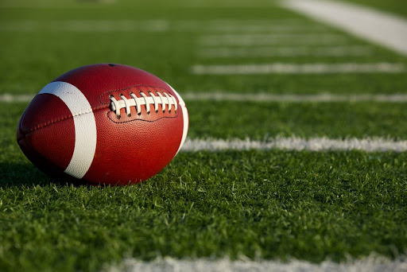

Cos'è il Football Americano?
Il football americano è uno sport di contatto nato negli Stati Uniti e caratterizzato da strategia, forza e velocità. Il gioco si svolge tra due squadre che competono per guadagnare terreno e segnare punti attraverso touchdown, field goal e safety.
Le Regole Fondamentali
Il campo è suddiviso in yard e l'obiettivo principale è avanzare la palla verso la end zone avversaria. Una squadra ha quattro tentativi per avanzare almeno 10 yard. Il gioco si interrompe quando un giocatore viene placcato o la palla esce dal campo.

Le Principali Competizioni
La NFL (National Football League) è la lega professionistica più famosa, culminando nel Super Bowl, uno degli eventi sportivi più seguiti al mondo. Esistono anche campionati universitari e internazionali che contribuiscono alla crescita dello sport.